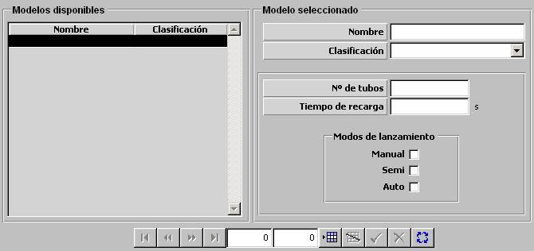

Mortero Chaff

Descripción de los parámetros:
Número de Tubos: Este parámetro determina el número de tubos independientes que tiene el mortero chaff. Es tenido en cuenta para la secuencia de lanzamiento y para la recarga del lanzador de chaff.
Unidades: ---
Rango: 0 – 99
Tiempo de Recarga: Este parámetro determina el tiempo que se tarda en efectuar una recarga del mortero desde que lo solicita el operador.
Unidades: ---
Rango: 0 – 999
Modos de Lanzamiento: Los siguientes parámetros determinan si el mortero tiene capacidad de efectuar lanzamientos en Manual, Semiautomático o Automático. Sólo aquellos modos de lanzamiento de los que el mortero tenga capacidad podrán ser activados por el operador para este mortero.
Manual: Este parámetro determina si el mortero tiene capacidad de efectuar lanzamientos en modo Manual: todo el proceso de lanzamiento está a cargo del operador.
Semiautomático: Este parámetro determina si el mortero tiene capacidad de efectuar lanzamientos en modo Semiautomático: todo el proceso de lanzamiento se hace en automático quedando pendiente la orden de disparo, que siempre debe efectuarla el operador.
Automático: Este parámetro determina si el mortero tiene capacidad de efectuar lanzamientos en modo Automático: todo el proceso de lanzamiento se hace de forma automática.